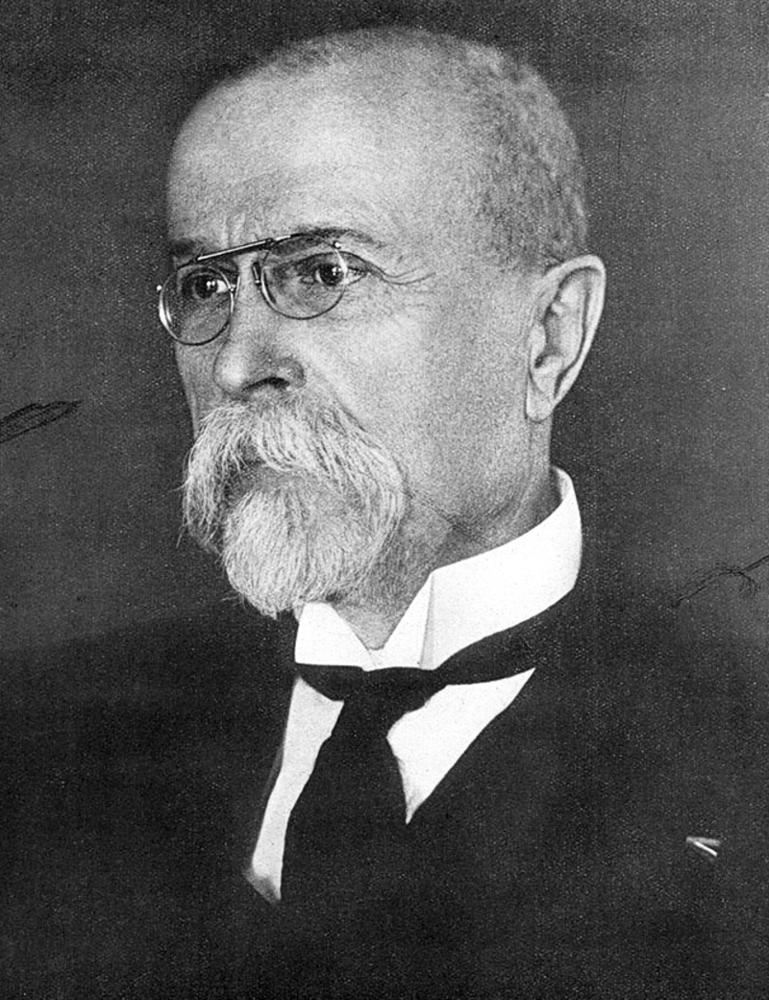

Geschichte im Spiegel der zeitgenössischen Berichterstattung — Täglich neu erzählt
Die historische Presseschau
Mittwoch, 13. Oktober 1926
7 Artikel aus 12 Originalquellen · 6 Länder · 5 Sprachen
Abrechnung mit der Streiktaktik auf der Parteikonferenz in Margate — Scharfe Angriffe gegen radikale Forderungen der Bergleute — Ramsay MacDonalds sechzigster Geburtstag

Kabinett Svehla gebildet — Historische Wende in der tschechoslowakischen Innenpolitik — Agrarzölle als Wegbereiter der Koalition
Drohender offener Konflikt in Russland — Scharfe Angriffe auf Trotzki und Sinowjew in der Provinz — Prawda fordert bedingungslose Parteidisziplin
Botschafter Besnard glättet Wogen — Italienische Presse sucht sich neues Ziel in Deutschland — Spitzen gegen das Eisenkartell
Bandenführer auf offener Straße erschossen — Fünf Opfer bei Anschlag aus dem Hinterhalt — Kriminalpolizei steht vor einem Rätsel
Erfolgreicher Abschluss der Reformen des Maharadschas — Regierung zahlt Millionen Rupien als Entschädigung
250.000 neue Wähler an den Urnen — Klerus und Parteien tief gespalten — Teilverbot oder völlige Freigabe?